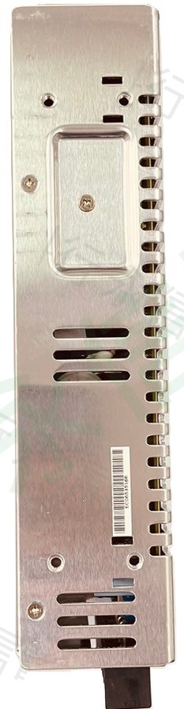

本頁商品照片已套用永信電料行浮水印；商品主圖優先選用前斜角照片，若無前斜角則改用正面照片。
PRODUCT OVERVIEW
產品用途與特點
SP-320-24 提供 320W 的 DC24V 輸出能力，可依設備功率需求應用於控制與機台供電。 永信電料行已依你提供的資料夾與照片建立商品頁，方便後續擴充更多同系列型號。
- 產品形式：金屬外殼交換式電源供應器，常用於控制盤、機台設備與工業 DC 供電。
- 輸入規格：AC110V~AC220V，替換前請確認設備現場電源條件。
- 輸出規格：DC24V 13.4A，請核對負載需求與啟動電流。
- 照片整理：本頁共整理 4 張商品照片，可切換查看不同角度與細節。
- 詢價建議：提供實物銘牌照片、設備用途與需求數量，可加快規格核對速度。
PRODUCT INFORMATION
電源供應器基本資料
品牌明緯 MEAN WELL
系列SP 系列
完整型號SP-320-24
產品類型開關式電源供應器
額定功率320W
輸入規格AC110V~AC220V
輸出規格DC24V 13.4A
安裝形式機箱／控制盤安裝
商品照片4 張
建議核對內容完整型號、輸入／輸出規格、安裝方式、端子配置
詢價附件銘牌照片、設備照片、需求數量
本頁資料以你提供的商品照片與資料夾名稱整理而成；更細節的安規、尺寸、效率與使用條件仍應以原廠資料為準。
VERIFIED SPECIFICATION DATA
詳細規格
產品定位SP 系列單輸出內置機殼型電源
輸出24V / 13.4A / 約 320W
明緯規格書的 AC 輸入範圍可能比機身標籤的標稱輸入範圍更寬；現場替換時須同時核對輸入條件、輸出電壓／電流、尺寸、端子與散熱。 系列共通資料僅用於補充辨識，不取代完整型號之原廠規格書與本件實物銘牌。